이카운트, 구매 업무에 필요한 것만
골라서 익히기
이카운트의 모든 메뉴를 다루지 않습니다. 우리 회사 구매·발주 업무에서 실제로 쓰는 화면만 골라, 처음 쓰는 사람도 발주서를 쓰고 입고를 처리할 수 있게 만든 기능 설명서입니다.
화면 캡처는 전부 실제 우리 회사 이카운트 화면(2026년 11월 20일)입니다. 빨간 번호는 아래 설명 번호와 짝입니다.
정문채 전무님이 2026년에 실제로 하신 구매 업무(거래처·주기·발주 패턴)를 정리한 문서입니다. 온라인본부에 요청하세요.
이카운트 첫 화면
이카운트는 회사의 장부 겸 업무 기록장입니다. 발주서를 쓰면 기록이 남고, 물건이 들어와 구매를 입력하면 재고가 늘고, 그 기록이 회계 장부로 넘어갑니다. 구매 담당이 입력한 숫자가 재고·원가·지급의 출발점입니다.
로그인
| 칸 | 입력값 |
|---|---|
| 회사코드 | 89445 (주식회사 산너머남촌) |
| 아이디 · 비밀번호 | 본인 계정. 계정 발급과 메뉴 권한은 회사 마스터(대표님·전무님·본부장님)가 줍니다 |
「권한없음」은 고장이 아니라 그 메뉴를 쓸 권한이 아직 없다는 뜻입니다. 구매 담당이라면 발주서 · 구매 · 구매관리현황 · 품목등록(조회) 권한이 필요합니다. 거래처등록·API 같은 메뉴는 마스터만 열 수 있습니다.
화면 구성
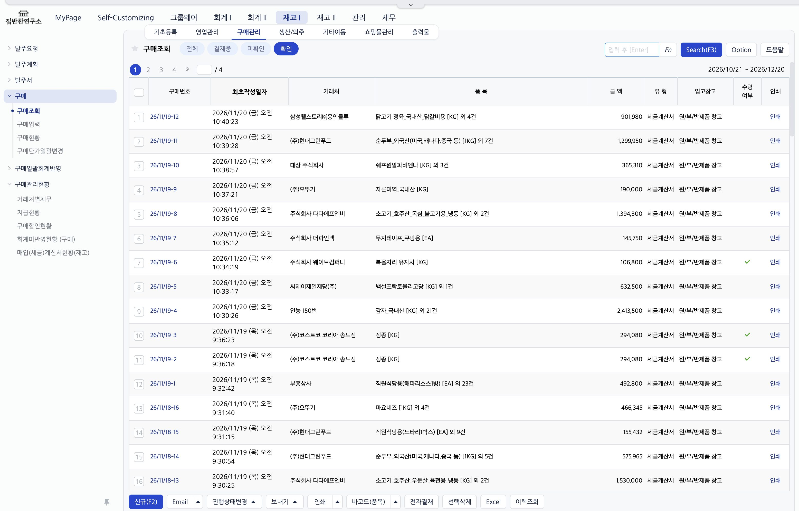
12345678- 1상단 메뉴 · 큰 영역. 구매 업무는 거의 전부 재고 I 안에 있습니다
- 2하위 탭 · 재고 I 안의 묶음. 구매 업무는 구매관리
- 3왼쪽 메뉴 · 실제 화면 이름. 펼침(›)을 눌러 하위 메뉴를 엽니다
- 4화면 제목과 별(☆) · 별을 누르면 즐겨찾기에 등록됩니다
- 5상태 탭 · 전체 / 결재중 / 미확인 / 확인 등으로 목록을 거릅니다
- 6Search(F3) · 기간·거래처 같은 검색 조건 열기
- 7하단 버튼줄 · 신규(F2), 인쇄, Excel 등 그 화면에서 할 수 있는 일
- 8전표 번호 · 파란 글씨를 누르면 그 기록이 열립니다
목록에서 전표 번호를 누르면 「발주서수정」「구매수정」처럼 고칠 수 있는 상태로 열립니다. 보기만 할 때는 아무것도 누르지 말고 오른쪽 위 X로 닫으세요. 저장(F8)을 누르지 않으면 바뀌지 않습니다.
메뉴 지도
구매 담당이 쓰는 메뉴는 재고 I → 구매관리와 재고 I → 기초등록 · 출력물 일부입니다. 아래 표의 「자주」 표시만 먼저 익히면 됩니다.
| 위치 | 메뉴 | 하는 일 | 빈도 |
|---|---|---|---|
| 구매관리 › 발주서 | 발주서입력 | 거래처에 주문할 내용을 새로 씀 | 매일 |
| 발주서조회 | 쓴 발주서 목록. 보내기·인쇄·진행 확인 | 매일 | |
| 발주서현황 | 발주 금액을 기간·거래처별로 합산한 보고서 | 필요 시 | |
| 미구매현황 | 발주했는데 아직 구매(입고) 처리가 안 된 품목 | 매일 | |
| 구매관리 › 구매 | 구매입력 | 실제로 들어온 물건을 기록 (재고 증가) | 매일 |
| 구매조회 | 입력한 구매 목록. 수정도 여기서 | 매일 | |
| 구매현황 | 구매 금액을 거래처·품목·월별로 합산한 보고서 | 월 1회+ | |
| 구매단가일괄변경 | 이미 입력한 구매의 단가를 한 번에 바꿈 | 드묾 | |
| 구매관리 › 구매일괄회계반영 | 구매일괄회계반영 | 한 달 구매를 거래처별로 회계 장부에 넘김 | 월말 |
| 구매관리 › 구매관리현황 | 거래처별채무 | 거래처별 매입 · 지급 · 남은 잔액 | 월말 |
| 지급현황 | 거래처에 돈을 낸 기록 | 필요 시 | |
| 회계미반영현황 (구매) | 아직 회계로 안 넘어간 구매 | 월말 | |
| 기초등록 | 품목등록 · 거래처등록 | 품목코드·기본 구매처·단가 확인. 신규 등록은 권한 필요 | 필요 시 |
| 출력물 › 재고현황 | 재고현황 · 창고별재고현황 · 재고수불부 | 발주 전에 남은 재고 확인 | 매일 |
모든 화면 공통 조작
이카운트는 화면마다 생김새가 조금씩 달라도 검색 조건 → 검색 → 결과 순서는 같습니다. 이 다섯 가지만 손에 익히면 어느 화면이든 다룰 수 있습니다.
① 검색 조건 열고 검색하기
② 날짜 바꾸기
연 · 월은 드롭다운을 눌러 고르고, 일은 칸을 눌러 숫자를 다시 씁니다. 조건 창 아래 금일 · 전일 · 금월 · 전월 · 금년 버튼을 누르면 기간이 한 번에 채워집니다.
③ 거래처 · 품목 · 담당자 넣기
| 방법 | 동작 |
|---|---|
| 이름 일부 입력 후 Enter | 맞는 것이 하나면 바로 들어가고, 여러 개면 목록 창이 뜸 → 골라서 클릭 |
| 돋보기(🔍) 클릭 | 전체 목록 창이 열림. 창 안 검색칸에 입력 후 Enter |
| 칩 지우기 | 조건 칸에 들어간 이름표(칩) 옆 ⊖ 또는 오른쪽 X |
거래처는 등록된 이름으로만 찾아집니다. 예: SSG는 「(주) 이마트」, 쿠팡은 「(주)포워드벤처스(쿠팡)」. 안 나오면 이름의 다른 부분이나 사업자번호로 찾아 보세요.
④ 목록 거르기 · 넘기기
목록 위 상태 탭(전체 / 진행중 / 완료 / 미확인)으로 거르고, 아래 페이지 번호로 넘깁니다. 오른쪽 위 작은 검색칸(입력 후 [Enter])은 지금 목록 안에서만 찾습니다.
⑤ 엑셀로 받기
목록 화면은 하단 Excel, 보고서 화면은 Excel(화면). 화면에 보이는 조건 그대로 내려받습니다.
구매현황을 「라인별」로 1년치 받으면 중간에서 끊깁니다. 기간을 2~3개월씩 나누거나, 집계로 바꿔서 받으세요. 잘렸는지는 마지막 줄에 총합계가 있는지로 확인합니다.
즐겨찾기
화면 제목 옆 ☆을 누르면 별이 노랗게 바뀌고 즐겨찾기에 등록됩니다. 발주서입력 · 발주서조회 · 구매입력 · 미구매현황 네 개는 첫날 등록해 두세요.
코드 읽는 법
이카운트는 모든 것을 코드로 기억합니다. 화면에 이름이 같이 나오지만, 같은 이름이 여러 개일 때 구분하는 기준은 코드입니다.
품목코드 앞부분 = 품목의 종류
| 앞부분 | 품목구분 | 예시 | 주로 사는 사람 |
|---|---|---|---|
ZIP_M_ | 원재료 | 다진마늘_국내산, 깐양파_국내산, 살균전란, 샘표 국산콩간장 | 정문채 전무 |
ZIP_S_ | 부재료 | 아이스박스, 무인쇄 박스, 파우치필름, 생수 | 유현순 |
ZIP_E_ | 부재료 (소모품) | 라벨지, 테이프, 장갑, 세척제 | 박은솔 · 정혜윤 |
ZIP_C_ | 상품 (완제품 매입) | 햇반, 셀렉스, 사보텐 돈카츠, 온올림 갈비 | 여러 명 |
ZIP_H_ · SAN_ | 반제품 | 맛간장_집반찬연구소, 제육소스 (직접 만들어 쓰는 것) | 구매 대상 아님 |
ZIP_P_ | 제품 | 우리가 만들어 파는 반찬 · 식단 | 구매 대상 아님 |
_국내산, _중국산, _외국산, _수입산). 같은 재료라도 원산지가 다르면 다른 코드입니다. 발주할 때 끝까지 확인하세요.그 밖의 코드
| 항목 | 예시 | 읽는 법 |
|---|---|---|
| 거래처코드 | 2158754185 유한회사대흥물산 | 대부분 거래처의 사업자등록번호 10자리 |
| 담당자 | SN02-09-01 정문채 | 그 기록을 맡은 사람. 현황 보고서에서 사람별로 거를 때 씀 |
| 입고창고 | S01 원/부/반제품 창고 | 원재료 발주 · 구매는 거의 전부 S01 |
| 거래유형 | 세금계산서 | 기본값. 면세 품목(채소·육류 등)은 같은 유형 안에서 부가세 0으로 들어감 |
| 전표번호 | 26/11/19-12 | 2026년 11월 19일의 12번째 기록. 날짜가 바뀌면 1번부터 다시 셈. 발주서와 구매는 번호를 따로 세서 같은 번호가 둘 다 있을 수 있음 |
발주서 입력
발주서는 거래처에 보내는 주문서이자, 나중에 구매입력을 빠르게 하기 위한 밑그림입니다. 발주서를 제대로 써 두면 입고 날 「불러오기」 한 번으로 구매입력이 끝납니다.
위치: 재고 I → 구매관리 → 발주서 → 발주서입력
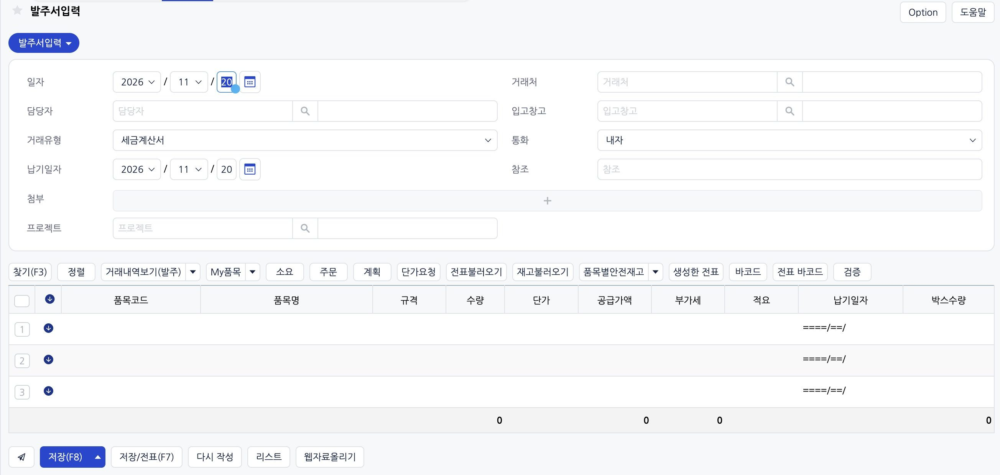
123456789- 1일자 · 발주하는 날. 오늘 날짜가 자동으로 들어감
- 2거래처 · 이름 일부 입력 후 Enter
- 3담당자 · 본인 이름 (현황 보고서에서 내 발주만 거를 때 기준)
- 4입고창고 · 원재료는
S01원/부/반제품 창고 - 5납기일자 · 물건을 받을 날. 품목 줄의 납기일자에 그대로 복사됨
- 6품목코드 · 코드나 품목명 일부 입력 후 Enter
- 7수량 · 단가 · 단가를 바꾸면 공급가액이 자동 계산
- 8도움 버튼 · 거래내역보기(발주), 전표불러오기, 재고불러오기, 품목별안전재고
- 9저장(F8) · 눌러야 기록이 남음
순서
전표불러오기로 예전 발주서를 불러와 수량만 고치면 빠릅니다. 거래내역보기(발주)는 그 거래처에 예전에 무엇을 얼마에 시켰는지 보여줍니다.
저장된 발주서는 이렇게 보입니다
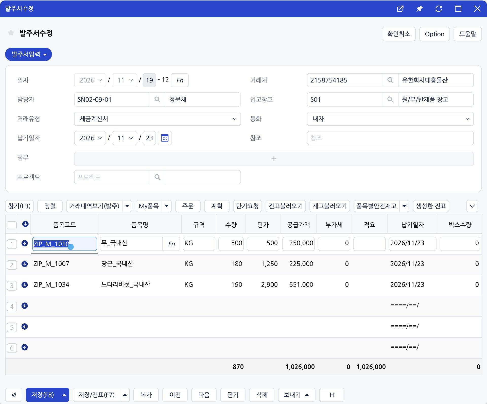
123456- 1거래처
- 2담당자 (전무님 발주는
SN02-09-01정문채) - 3납기일자 · 물건 받을 날
- 4품목 줄 · 무 500KG × 500원 = 250,000원
- 5합계 · 수량 · 공급가액 · 부가세 · 합계
- 6저장(F8) · 고친 게 없으면 누르지 말고 X로 닫기
품목을 고르면 품목등록에 적힌 입고단가가 미리 채워질 수 있습니다 (위 예시의 무 500원 · 당근 1,250원은 품목등록 입고단가와 같음). 시세가 바뀌는 채소 · 수산물은 거래처 견적과 다를 수 있으니, 저장 전에 단가를 한 번 보세요.
발주서 보내기 · 인쇄
저장만 해서는 거래처가 모릅니다. 보내기(Email · 카카오톡)로 이카운트에서 바로 보내거나, 거래처가 정해 둔 다른 방법으로 주문합니다.
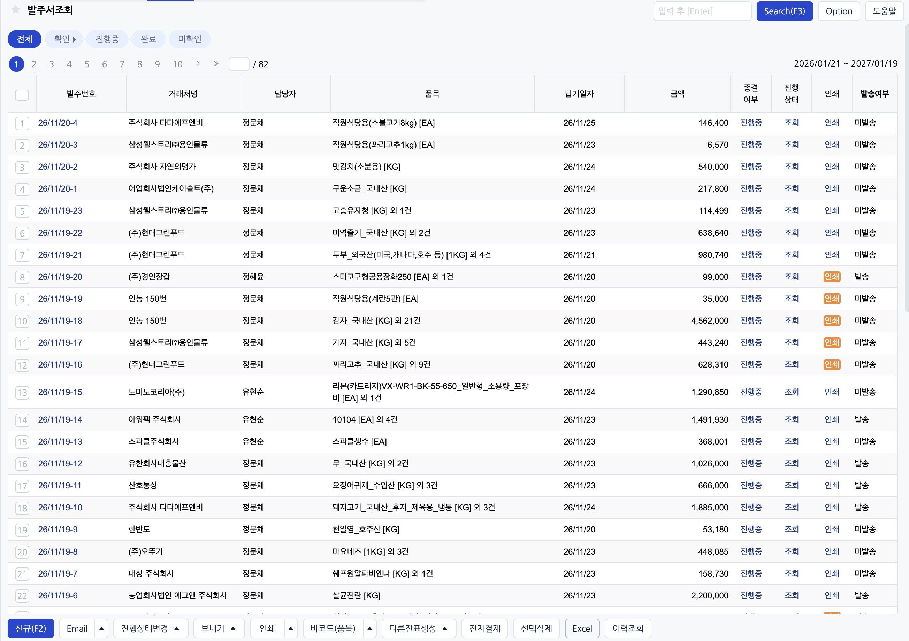
1234567- 1상태 탭 · 전체 / 진행중(아직 입고 처리 전) / 완료
- 2발주번호 · 누르면 발주서가 열림
- 3납기일자
- 4진행상태 조회 · 이 발주로 만든 구매 전표 확인 (PART 07)
- 5발송여부 · 이카운트로 보냈으면 「발송」, 아니면 「미발송」
- 6다른전표생성 · 발주서를 그대로 구매전표로 만드는 버튼
- 7Email · 체크한 발주서를 메일로 보냄 (▲를 누르면 카카오톡)
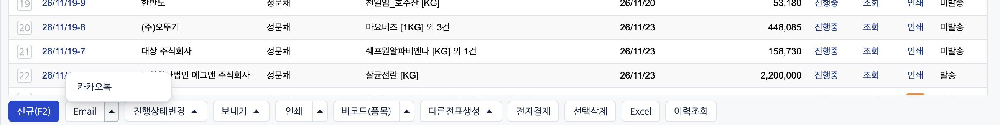
12- 1Email · 거래처 메일로 발주서 발송
- 2카카오톡 · 카카오톡으로 발주서 발송
보내는 순서
인쇄
하단 인쇄로 발주서를 출력하거나 PDF로 저장합니다. 한 번 인쇄한 발주서는 목록의 「인쇄」 글자가 주황색으로 바뀝니다.
입고 후 구매입력
물건이 들어오면 거래명세서와 실물을 대조한 뒤 구매입력을 합니다. 구매입력을 해야 재고가 늘고, 월말 정산 · 지급의 근거가 됩니다. 발주서를 불러와서 입력하는 것이 기본입니다.
위치: 재고 I → 구매관리 → 구매 → 구매입력
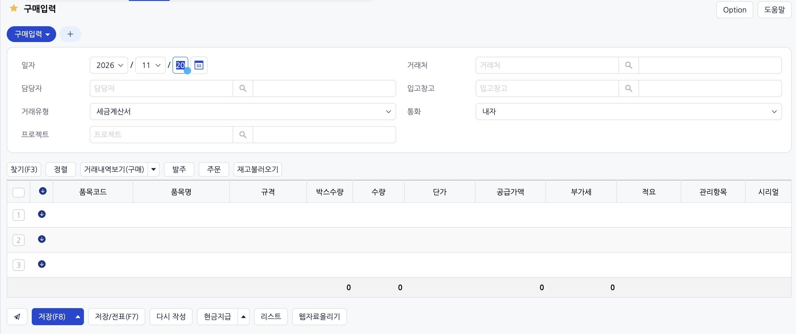
12345- 1일자 · 실제로 물건이 들어온 날 (입력하는 날이 아님)
- 2거래처
- 3발주 버튼 · 발주서를 불러옴
- 4품목 줄 · 불러오면 자동으로 채워짐
- 5저장(F8)
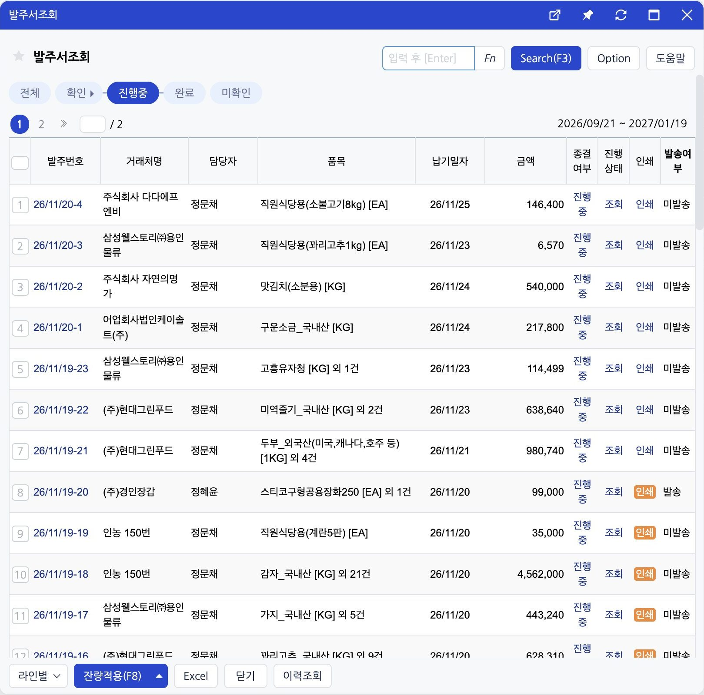
123- 1진행중 탭 · 아직 입고 처리가 안 된 발주서만 보임
- 2받은 발주서 줄의 맨 왼쪽 칸 체크 · 맨 위 머리글 칸은 전체 선택이니 누르지 않습니다
- 3잔량적용(F8) · 남은 수량을 구매입력 화면으로 가져옴
순서
다른 방법 · 발주서조회에서 바로 만들기
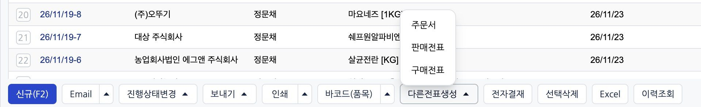
12- 1구매전표 · 체크한 발주서로 구매 전표를 만듦
- 2다른전표생성 버튼
불러오기 없이 새로 입력하면 발주서가 「진행중」으로 계속 남아 미구매현황이 지저분해집니다. 발주 없이 산 것(마트 현장 구매 등)만 직접 입력합니다.
진행 확인하기
「시켰는데 안 들어온 것」, 「들어왔는데 입력 안 한 것」을 매일 한 번 확인합니다. 이 두 가지가 구매 담당 실수의 대부분입니다.
발주서의 상태
(전량)완료진행중일부만
입고진행중 (잔량 남음)
미구매현황 · 아직 입고 처리 안 된 품목
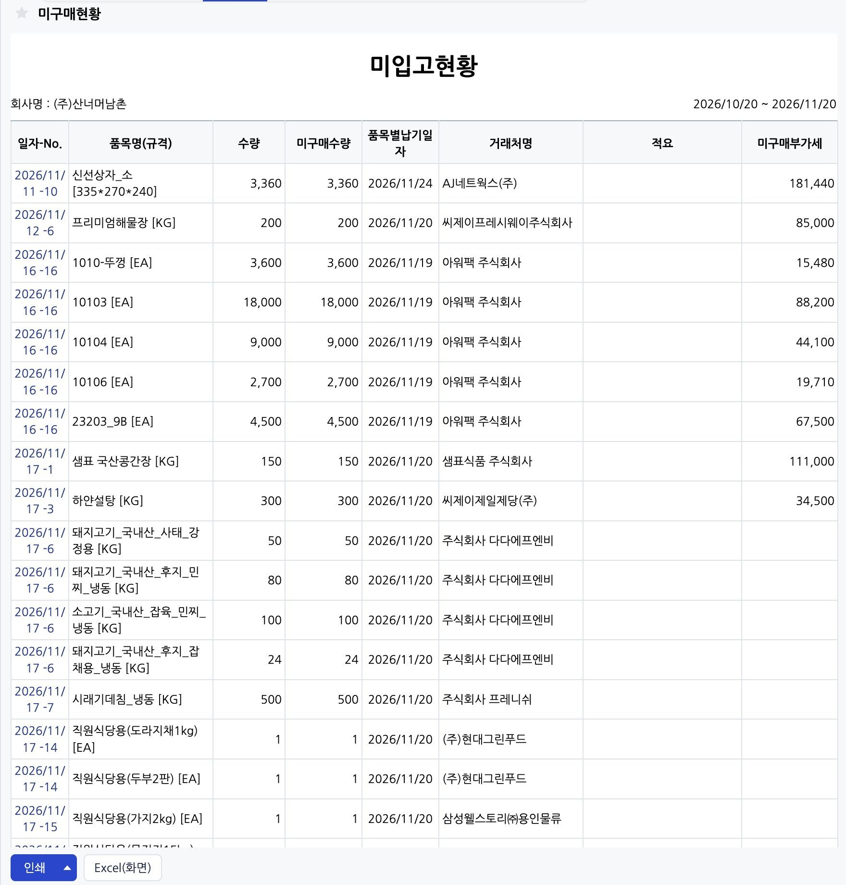
12- 1미구매수량 · 발주했지만 아직 구매입력이 안 된 수량
- 2품목별납기일자 · 이 날짜가 지났는데 남아 있으면 확인 대상
납기일자가 어제 이전인데 남아 있는 줄 → ① 물건이 안 왔는지 (거래처에 확인) ② 왔는데 입력을 안 했는지 (구매입력) ③ 취소된 건지 (발주서 정리) 셋 중 하나입니다.
이 발주로 만든 구매 전표 보기
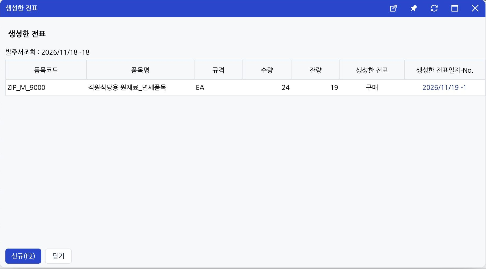
123- 1잔량 · 아직 구매로 안 넘어간 수량
- 2생성한 전표 · 「구매」
- 3전표 번호 · 누르면 해당 구매 전표로 이동
구매조회 · 입력한 구매 목록
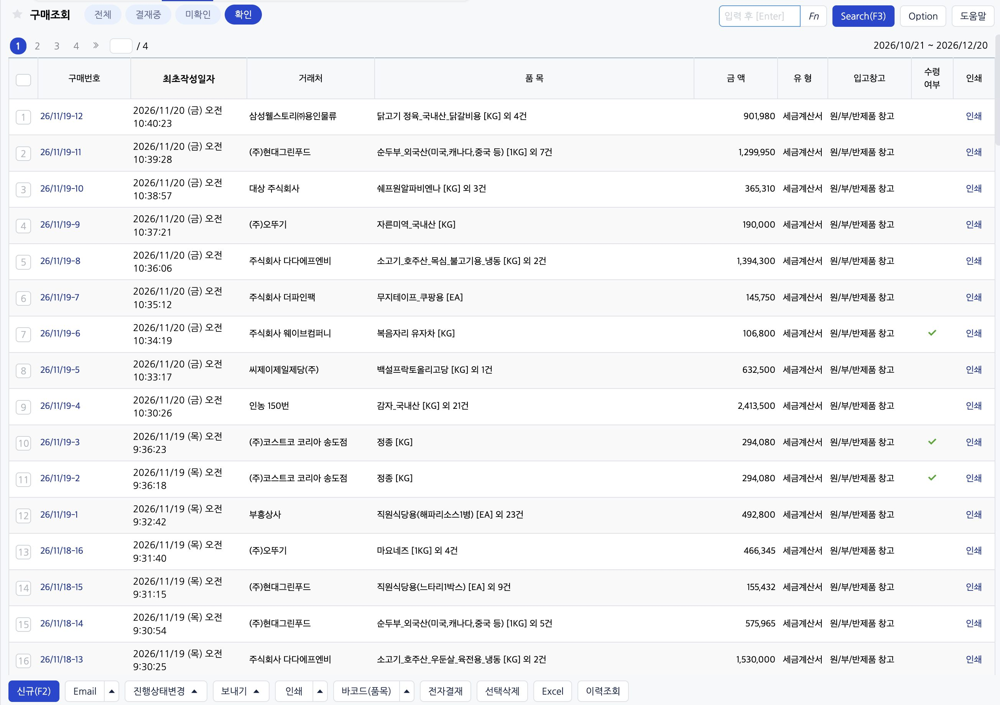
1234- 1구매번호 · 누르면 구매수정 화면
- 2최초작성일자 · 실제로 입력한 시각
- 3수령여부 · 일부 전표에만 체크 표시가 있습니다. 쓰는 방법은 선임에게 물어보세요
- 4이력조회 · 체크한 전표를 누가 언제 고쳤는지
현황 보고서 보기
「현황」 메뉴는 입력한 기록을 더해서 보여주는 보고서입니다. 아무것도 바뀌지 않으니 마음껏 눌러 봐도 됩니다.
구매현황 · 집계로 보기
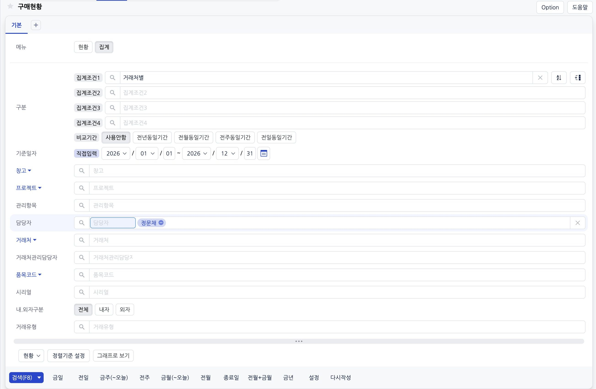
12345- 1현황 / 집계 · 집계를 누르면 「무엇별로 더할지」 고를 수 있음
- 2집계조건 · 거래처별 · 품목별 · 월별 · 담당자별 등. 여러 개를 겹쳐 쓰면 「거래처 안의 품목」처럼 나뉨
- 3기준일자 · 기간
- 4담당자 · 본인 이름을 넣으면 내 구매만
- 5검색(F8)
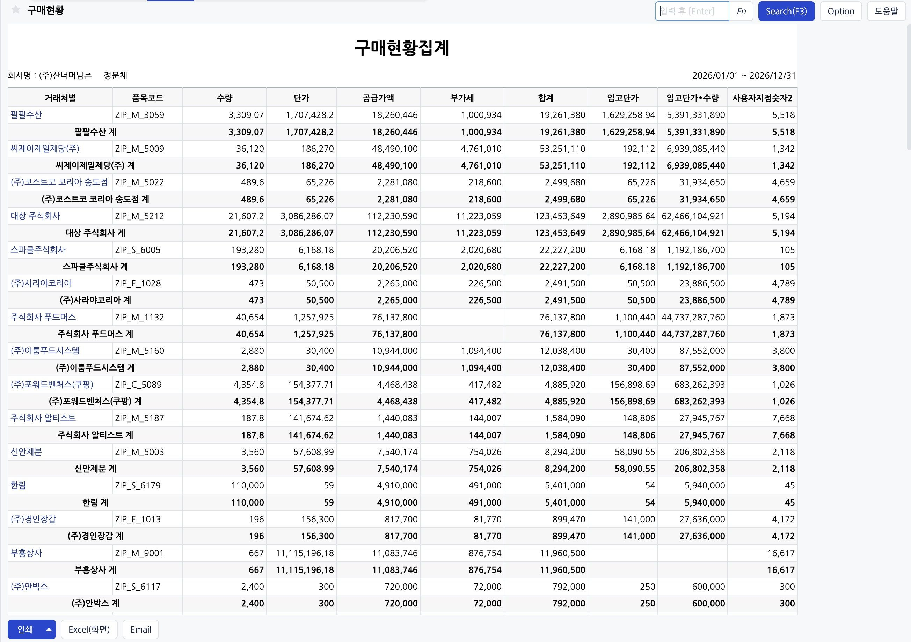
123- 1거래처별
- 2거래처 계 · 그 거래처의 합계 줄
- 3합계 · 부가세 포함 금액
거래처별채무 · 줄 돈이 얼마 남았나
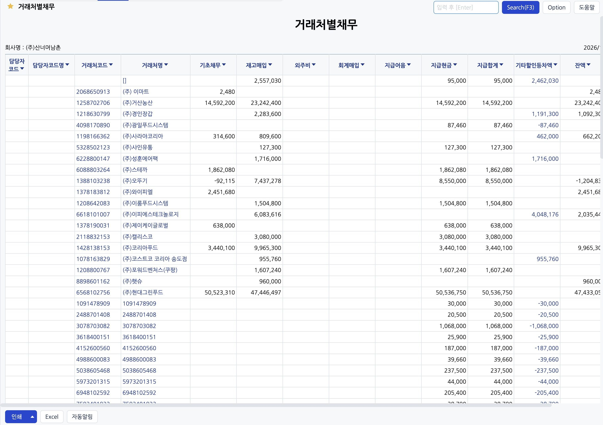
1234- 1기초채무 · 기간 시작 때 남아 있던 금액
- 2재고매입 · 기간 중 구매입력한 금액
- 3지급합계 · 기간 중 낸 돈
- 4잔액 · 아직 안 낸 돈 (그림은 오른쪽이 잘려 금액 끝자리가 안 보입니다. 실제 화면에서는 맨 오른쪽 열)
재고현황 · 발주 전에 남은 양 보기
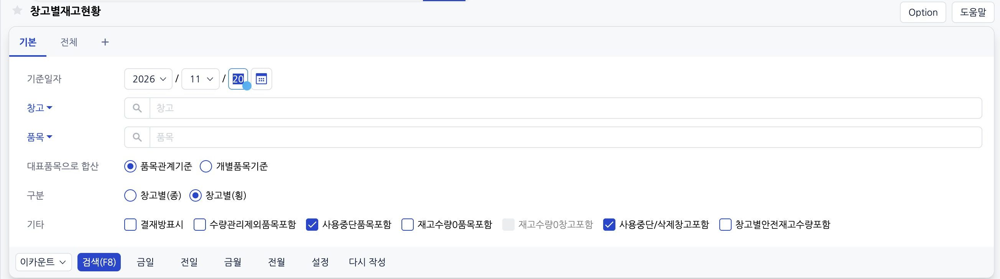
1234- 1기준일자 · 이 날짜 기준 재고
- 2창고 ·
S01로 거르면 원/부/반제품 창고만 - 3품목 · 품목 하나만 볼 때
- 4검색(F8)
재고는 「기초 재고 + 구매입력 − 생산 사용 · 출고 ± 재고조정」으로 계산됩니다. 구매입력이 밀리면 재고가 실제보다 적게 보입니다. 발주량을 정하기 전에 미입력 구매가 없는지 먼저 보세요.
구매일괄회계반영 · 월말 장부 넘기기
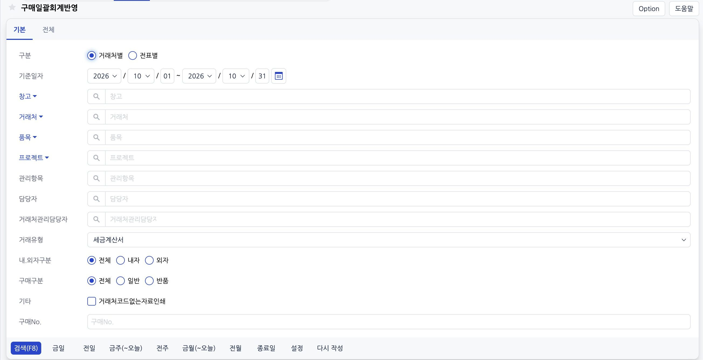
123- 1거래처별 / 전표별 · 한 달 구매를 거래처 단위로 묶어 회계 전표로 만듦
- 2기준일자 · 보통 한 달 (1일~말일)
- 3거래유형 · 세금계산서
품목 정보 찾기
품목등록에는 품목마다 기본 구매처 · 입고단가 · 최소구매단위 · 보관 위치가 적혀 있습니다. 처음 보는 원재료를 발주할 때 여기부터 봅니다.
위치: 재고 I → 기초등록 → 품목등록
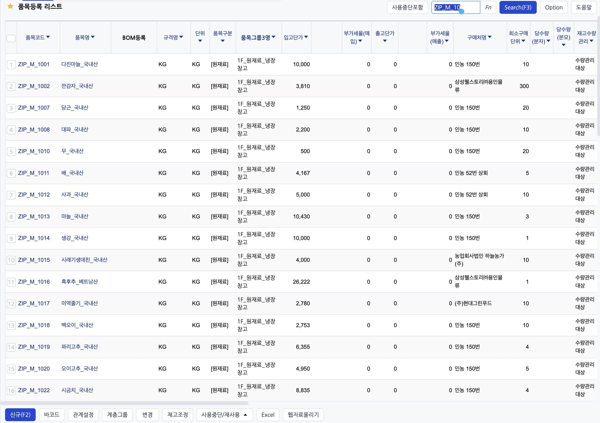
123456- 1검색칸 · 코드나 이름 일부 입력 후 Enter
- 2품목코드 · 누르면 상세 (수정 화면이니 조심)
- 3품목그룹3명 · 보관 위치 (예: 1F_원재료_냉장창고)
- 4입고단가 · 기본 매입 단가
- 5구매처명 · 기본 거래처
- 6최소구매단위 · 한 번에 시켜야 하는 최소 수량
새 원재료나 새 거래처는 등록 권한이 있는 사람이 먼저 만들어야 발주서에 쓸 수 있습니다. 등록 절차와 담당은 인계서 PART 08 확인 목록에 있습니다.
단축키 치트시트
아래 표의 위쪽 네 개만 써도 마우스 이동이 절반으로 줄어듭니다. 맥에서는 F키를 누를 때 fn을 같이 누릅니다 (위에서 Mac을 고르면 표기가 바뀝니다).
| 키 | 동작 |
|---|---|
| F8 | 검색 화면에서는 검색, 입력 화면에서는 저장, 불러오기 창에서는 적용 |
| F3 | 검색 조건 열기 (입력 화면에서는 품목 찾기) |
| F2 | 신규 (새 발주서 · 새 구매) |
| Enter | 코드 · 이름 입력 후 찾기 / 다음 칸으로 |
| Tab | 입력 칸 이동 (날짜의 일 칸을 고친 뒤 눌러 확정) |
| Esc | 열린 목록 · 메뉴 닫기 |
막혔을 때 Q&A
처음 쓰는 사람이 실제로 가장 자주 부딪히는 상황입니다.
목록에서 번호를 눌렀더니 수정 화면이 떠서 겁나요
저장(F8)을 누르지 않았다면 아무것도 바뀌지 않습니다. 오른쪽 위 X로 닫으세요. 닫을 때 저장하겠냐고 물으면 「아니요」.
구매입력을 잘못 저장했어요
구매조회에서 그 전표를 열어 고친 뒤 다시 저장하면 됩니다. 이미 월말 회계반영이 끝난 달이면 회계 담당에게 먼저 알리세요. 누가 언제 고쳤는지는 이력조회에 남습니다.
발주서가 계속 「진행중」으로 남아 있어요
구매입력을 발주서 불러오기 없이 했거나, 일부만 입고되어 잔량이 남은 경우입니다. 진행상태 「조회」로 잔량을 보고, 더 안 들어올 물건이면 진행상태변경으로 정리합니다.
거래처나 품목이 검색에 안 나와요
등록된 이름이 다를 수 있습니다 (예: SSG → 「(주) 이마트」). 이름 일부, 사업자번호로 다시 찾아 보고, 정말 없으면 신규 등록이 필요합니다.
엑셀로 받았더니 중간이 잘렸어요
보고서는 약 5,000줄에서 끊깁니다. 기간을 나누거나 집계로 받으세요. 마지막 줄에 총합계가 있어야 다 받은 것입니다.
「권한없음」 화면이 나와요
그 메뉴의 권한이 없는 것입니다. 필요한 메뉴 이름을 적어 회사 마스터에게 요청하세요.
날짜를 바꿨는데 검색 결과가 그대로예요
일 칸을 고친 뒤 Tab을 눌러 확정했는지 보세요. 연 · 월은 드롭다운에서 클릭으로 골라야 적용됩니다.
같은 이름 품목이 두 개 나와요
원산지나 규격이 다른 별개 품목입니다 (예: _국내산 / _중국산, KG / 1KG). 코드와 이름 끝부분을 끝까지 확인하세요.
직접 해보기
이카운트에는 연습용 공간이 없습니다. 입력한 것은 전부 실제 장부에 남습니다. 그래서 연습은 조회와 저장 전까지만 합니다.
| # | 과제 | 확인 포인트 |
|---|---|---|
| 1 | 발주서입력 · 발주서조회 · 구매입력 · 미구매현황을 즐겨찾기에 등록 | 제목 옆 별이 노랗게 바뀌는지 |
| 2 | 발주서조회에서 「진행중」 탭만 보기 | 상태 탭이 바뀌는지 |
| 3 | 발주서 하나를 열어 보고 저장 없이 X로 닫기 | 목록 내용이 그대로인지 |
| 4 | 미구매현황에서 납기일자가 지난 줄 찾기 | 어떤 거래처 · 품목인지 말할 수 있는지 |
| 5 | 진행상태 「조회」로 완료된 발주서의 구매 전표 번호 찾기 | 생성한 전표 = 구매 |
| 6 | 구매현황을 집계 · 거래처별 · 이번 달로 검색 | 거래처 계 줄이 보이는지 |
| 7 | 같은 조건에 담당자 = 본인(또는 정문채) 넣어 다시 검색 | 합계가 줄어드는지 |
| 8 | 품목등록에서 ZIP_M_1010 찾기 | 무_국내산 · 구매처 인농 150번 |
| 9 | 창고별재고현황에서 S01 창고 재고 보기 | 원재료 재고가 보이는지 |
| 10 | 발주서입력에서 거래처 · 품목까지 채워 보고 저장하지 않고 「다시 작성」 | 빈 화면으로 돌아가는지 |
| 11 | 구매조회 목록을 Excel로 받기 | 파일이 열리는지 |
| 12 | 실제 첫 발주는 선임과 함께 입력 · 저장 | 발주서조회 맨 위에 「진행중」으로 생겼는지 |
이카운트 때문에 막힐 일은 거의 없습니다. 남은 건 거래처마다 언제 무엇을 얼마나 시키는지인데, 그건 구매·발주 업무 인계서 (PDF)에 정리되어 있습니다.